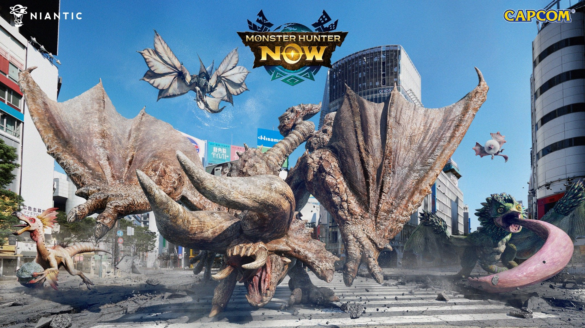
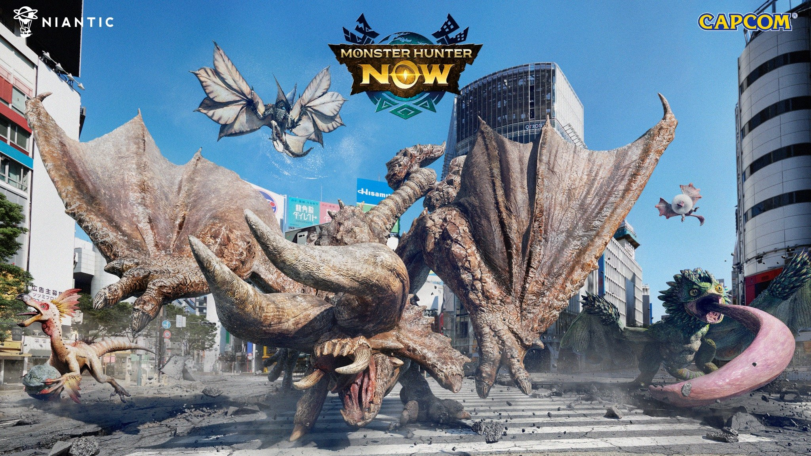

TF - True Fighters Gaming
La True Fighters Gaming, souvent abrégée en TF, a vu le jour en 2012 en tant qu'équipe fondée sur la
plateforme Xbox 360, initialement axée sur le jeu sous la licence emblématique, Halo.
Ce commencement modeste s'est rapidement transformé en une communauté dynamique et engagée, propulsant la TF
vers une évolution
majeure.
En 2015, la TF a franchi une étape décisive en se structurant en tant qu'association officielle sous le
statut
de la loi 1901, consacrant ainsi son engagement envers les valeurs fondamentales du fair-play, de
l'entraide,
du plaisir de jeu et de l'esprit d'équipe. Depuis sa formation, la TF s'est affirmée comme un bastion de
convivialité et d'inclusion, offrant un espace de jeu où chaque membre peut s'épanouir selon ses préférences
et ses objectifs.
Fondée sur le principe de liberté, la TF permet à tout passionné de jeux vidéo de rejoindre ses rangs sans
frais d'adhésion. Cependant, cette ouverture est associée à des critères rigoureux qui déterminent
l'approbation ou le rejet des demandes d'adhésion. Les membres, conscients de leur responsabilité, sont
encouragés à maintenir une image positive de l'association, contribuant ainsi à préserver sa réputation
enviable dans le monde du gaming.
L'association s'est étendue au-delà de sa naissance sur Xbox 360 pour inclure différentes plateformes telles
que Xbox One, PC et même Smartphone. Cette diversification a permis à la TF de toucher un public plus large,
offrant des opportunités de jeu et de rencontre entre membres lors de sessions multijoueurs.
La True Fighters Gaming est bien plus qu'une simple communauté de joueurs ; elle représente un esprit de
collaboration, d'innovation et de passion. La diversité des membres et des plateformes témoigne de sa nature
inclusive, où chaque joueur trouve sa place, que ce soit pour le loisir, la compétition ou pour contribuer
au
personnel.
Au-delà de ses activités de jeu, la TF s'est également investie dans les réseaux sociaux, entretenant une
présence active sur des plateformes telles que Facebook, YouTube et Twitter. Ces canaux permettent à
l'association de partager son contenu, ses événements et de rester connectée avec sa communauté de manière
interactive et engageante.
De plus, offrant des opportunités de bénévolat via des plateformes dédiées comme Jobs Game, la True Fighters
Gaming invite ceux qui le souhaitent à s'engager davantage dans ses activités, renforçant ainsi ses
fondations
communautaires.
En résumé, la True Fighters Gaming incarne une vision où le jeu vidéo devient une expérience enrichissante,
divertissante et collaborative, guidée par des valeurs solides et une passion commune pour le gaming. Cette
association continue de prospérer grâce à l'engagement de sa communauté, toujours ouverte à accueillir de
nouveaux membres désireux de partager cette aventure.
STAFF
| TF Belial |
| TF Belial incarne la polyvalence au sein de la TFG, occupant plusieurs rôles
clés au sein de l'association. En tant que président, rédacteur, développeur web et web designer, il est un élément essentiel de l'association de la TFG. |
| Président |
| Développeur web |
| Designer |
| Rédacteur |
| TF Akito Soma |
| TF Akito Soma, co-fondateur et vice-président de la TFG, il incarne la vision initiale et la
passion qui ont permis la création de l'association. Sa contribution fondatrice a été cruciale dans
l'établissement des bases de TFG. En tant que streamer, il partage avec ferveur sa passion pour les jeux vidéo avec la communauté, renforçant ainsi les liens entre les membres. Son rôle de co-fondateur reste un élément central dans l'ADN de la True Fighters Gaming, et sa présence continue d'inspirer et d'animer l'association. |
| Vice-Président |
| Co-Fondateur principal |
| Streamer |
| Player |
| TF Erk |
| TF Erk, co-fondateur principal de la True Fighters Gaming aux côtés de TF Akito Soma,
est un architecte créatif au sein de l'association. En tant que membre forgeur dans Halo, il a créé des
cartes et des modes de jeu personnalisés pour offrir des expériences uniques aux membres de la TFG. Son héritage créatif demeure un pilier de l'histoire de l'association, ayant façonné les premiers moments ludiques et communautaires de TFG. En tant qu'ancien membre, sa contribution continue à résonner au cœur de la True Fighters Gaming. |
| Co-Fondateur |
| Forgeur sur Halo |
| TF Dragneel |
| TF Dragneel occupe le rôle de secrétaire au sein de la TFG. Son engagement en tant que gardien des affaires administratives est un élément clé pour maintenir l'organisation et la fluidité des opérations au sein de l'association. |
| Secrétaire |
| TF Zer0 |
| TF Zer0 joue un rôle dynamique en tant que streamer au sein de TFG, partageant ses expériences de jeu avec la communauté. Sa présence active contribue à animer et divertir les membres de l'association. |
| Streamer |
| Player |